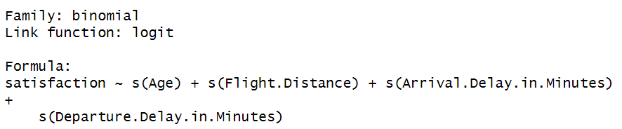
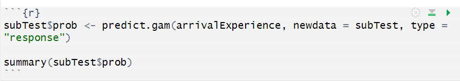

Statistical Methods
Support Vector Machines:
Support Vector Machines (SVMs) are powerful supervised learning models used for classification and regression tasks. They are particularly effective in high-dimensional spaces and when the number of dimensions exceeds the number of samples. SVMs work by finding the hyperplane that best separates different classes in the input space. Support Vectors are the data points that are closest to the hyperplane, while the hyperplane is a decision boundary that divides the feature space into two parts, one for each class. SVM aims to maximize the distance between the hyperplane and the support vectors to improve the model’s generalization ability and its resistance to overfitting.
SVMs can efficiently perform non-linear classification using a kernel. Instead of directly finding the hyperplane in the original input space, SVMs can implicitly map the input vectors into high-dimensional feature spaces. Common kernels include linear, polynomial, radial basis function (RBF), and sigmoid kernels. SVMs also incorporate regularization parameters that control the trade-off between maximizing the margin and minimizing classification errors. This helps prevent overfitting and improves the model’s performance. SVM utilizes a loss function which penalizes misclassification and aims to minimize classification errors while maximizing the margin. Common loss functions include hinge loss for classification tasks and epsilon-insensitive loss for regression tasks.
In this case we will create a model that will divide the observations into two groups in order to predict which observations belong in the satisfied class and which belong in the non-satisfied class based on the data features.
Logistic Regression:
A logistic regression model is a machine learning model that is used in classification problems to assign one of two or more labels to each data point. Logistic regression uses a discriminative modeling approach where the probabilities of classes are evaluated using X directly which differentiates it from the similar naive Bayes classifier. A logistic regression model takes training data with both inputs and outputs and is trained using stochastic gradient descent and cross-entropy loss. The trained model then applies a label to each input of the test data set by determining the probability of each label being correct and assigning the label with the highest probability. In binary classification, which we will do in this analysis, the decision boundary is such that if the probability of one label is higher than 0.5 then that label will be assigned (Jurafsky & Martin, 2008).
Logistic regression is a good classifier to use for large data sets with potentially correlated features. The model can detect correlated features and will split part of the weight between each of the correlated features rather than treating them as independent features like a naive Bayes classifier (Jurafsky & Martin, 2008). Our dataset has many features that have potential to be highly correlated such as satisfaction with the check-in service and satisfaction with the boarding service so a logistic regression model is best for the data set we are working with.
In this analysis, we will train a logistic regression model that can identify whether or not a passenger was satisfied with their flight experience based on responses to survey questions. Through this model we will be able to identify the most important features for airline passenger satisfaction.
Generalized Additive Models:
Generalized Additive Models are models that allow for non- linearity among quantitative and qualitative variables. Specifically, Generalized Additive Models are composed of,” non- linear functions of each of the [predictor] variables” (James, et al., 2021). A step above a simple generalized linear model, Generalized Additive Models display a response variable against its predictors in a way that allows one to gain a better idea of the non- linearity within the model’s relationships.
The additive nature of Generalized Additive Models is implemented through the function of each explanatory variable being added together to form a relatively smoothed out non- linear line. This allows for a more comprehensible perspective of the feature’s influences on the response variable. In the case of airline passenger satisfaction, the only continuous variables in the dataset are: Age, Arrival Delays, Departure Delays, and Flight Distance. Using these features as predictor variables against our response variable (satisfaction) will now provide insight into how these specific variables influence passenger satisfaction.
Using a Generalized Additive Model for our analysis provides a few advantages for viewing the relationship in our data set. One benefit is the efficiency we are afforded when we implement the model, instead of being forced to resort to manually trying out different transformations on each predictor variable to make room for non- linearity (James, et al., 2021). Another advantage is, due to the model being additive, we can now see what effect each individual predictor variable (age, arrival delays in minutes, departure delays in minutes, and the distance flown by the passenger) will have on satisfaction. With that said, these benefits heavily influenced our choice to include the model in our analyses.
To implement our Generalized Additive Models, the package, “mgcv”, from our R library is imported. For reproducibility, a seed of 100 is set for each of our Generalized Additive Model functions. From the “mgcv” package in R, the “gam” function is utilized on our training subset. Where the satisfaction column is our response variable and the columns for age, flight distance traveled, departure delay in minutes, and arrival delay in minutes are the predictor variables. Each predictor variable is affected by R’s smoothing function, which causes each function to be affected by smoothing splines to give a more summarized view of each observed relationship.

From the “mgcv” package in R, the “predict.gam” function is utilized to predict the choice of satisfaction for our testing subset using one of our previous Generalized Additive Models on our training data subset. This includes inputting the chosen previous model, our testing subset, and our preference to have the predictions be returned as probabilities. This creates a new column in our testing subset, called, “prob,” which will house the prediction probabilities.
